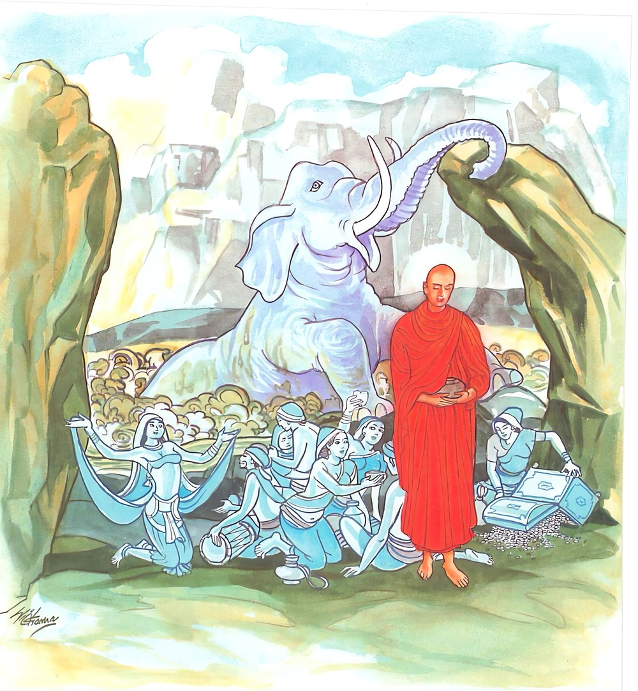

23-6 බද්ධේරක ඇතාගේ කථා පුවත
මෙම කතාව සද්ධර්ම සාගරයෙන් ද කියවන්න.
අප්පමාදරතා හොථ සචිත්තමනුරක්ඛථ
දුග්ගා උද්ධරථත්තානං පඞ්කෙ සන්නො’ව කුඤ්ජරො.
නොපමාබව්හි ඇලුනෝ වවු. සිය සිත (නානා අරමුණෙන් වළකා) රකිවු. ගැඹුරු මඩෙහි ගැලුනු ඇතු (වෑයම් කොට එයින් නැගී ගොඩැ පිහිටියා) මෙන් තෙපි (යෝනිසෝමනස්කාරයෙන් යුක්ත ව වීර්ය කොට) තමන් කෙලෙස් දුදුලෙන් ගොඩැ නඟවු.

"අප්පමාදරතොති" යන මේ ධර්මදේශනය තථාගතයන් වහන්සේ ජේතවනාරාමයේ වැඩසිටියදී කොසොල් රජුගේ බද්ධේරක නම් ඇතෙක් පිළිබඳව දේශනා කළහ.
එම ඇතා තරුණ කාලයේදී මහා බලවතෙක්ව සිට වැඩකර පසුව වයසට යාම නිසා ආබාධවලින් පෙළුනේ එක් මහා විලක එරී මඩේ ලැග එගොඩ වීමට නොහැකිවිය. මහජනයා එය දැක මෙබඳු බලවත් ඇතා මෙසේ දුබල බවට පත්වූයේ කෙසේ උඩට ගන්නහුද, රජු මේ පුවත අසා ඇත්ගොව්වාට අණකළේය යන එම ඇතා මඩෙන් පිටතට ගන්නැයි නියෝග දුනි. ඔහු එතැනට ගොස් ස්ථානයේ සංග්රාම බිමලෙස දක්වා යුදබෙර නාද කළේය. මානයෙන් යුත් ඇතා වේගයෙන් නැගිට ගොඩබිම පිහිටියේය. භික්ෂූන් මේ කරුණ දැක තථාගතයන් වහන්සේට දන්වා සිටියහ. බුදුහු මහණෙහි මේ ඇතා විසින් ප්රකෘතියෙන් මඩේ එරි දුකට පත්වුයේ තමන් විසින් ම උඩට ආවේය. තෙපි ද කෙලෙස් දුර්ගයක වැටුන්නේ එනිසා යෝනිසෝ මනසිකාරය පිහිටුවා තමන් ද, කෙලෙස්මඩින් උඩට නැගෙමු. යයි පවසා මේ ගාථාව දෙසුහ.
පහන් සිත රකින්න. අප්රමාදී වෙන්න මඩේ ගැලුන ඇතා ගොඩට ආවාසේ තෙපිද කෙලෙස් දුදුලෙන් ගොඩ නැගෙව.
මාසිත තුළ හොවී කෙළෙසුන් වෙමින් ගුලී
උදුරා දැමීය යුතු වෙයි ලැබ ගනුව එලී
ගොඩ එන පරිදි මතැතෙකු මඩ වගුරෙ ගිලී
විදසුන් නැණින් නොපමාවෙන් සිදීමි යලී
එහි අප්පමාදරතා සිහියෙන් වෙන්ව නොසිටීමේ කැමැත්ත ඇත්තේ මව් සචිත්තං රූපාදී අරමුණුවල තමගේ සිතට කැමති පරිදි හැසිරීමට ඉඩ නොදෙව් සිත රකිව් දුග්ගා යම් සේ, පඞකෙසත්තෝ කුඤජරො අත් පා වලින් උත්සාහ කොට මඩවගුරෙන් උඩට විත් පොළවෙහි සිටින්නට සමත් ඇතා මෙන්, තෙපිද කෙලෙස් මඩින් අත්තානං උදධරථ තමන් ගොඩ වී නිර්වාණය නමැති ස්ථාලයෙහි පිහිටව් යන අර්ථයි.
දේශනාවසානයේ ඒ භික්ෂුහු අරිහත් ඵලයෙහි පිහිටියාහුය.